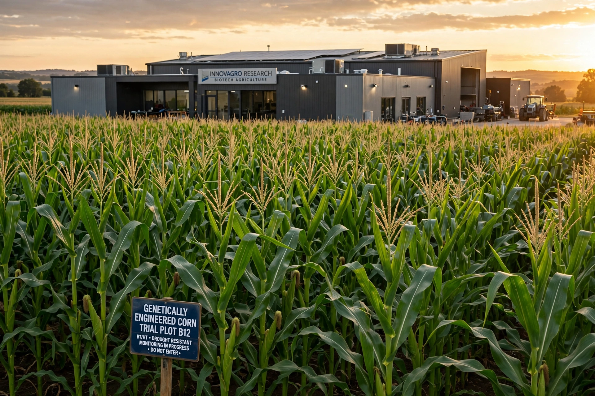

Monsanto
| Monsanto Company | |
|---|---|
| Industry | Agrochemicals, agricultural biotechnology |
| Founded | 1901; St. Louis, Missouri, U.S. |
| Founder | John Francis Queeny |
| Defunct | June 7, 2018 (acquired by Bayer) |
| Headquarters | Creve Coeur, Missouri, U.S. |
| Key products | Roundup (glyphosate herbicide), Roundup Ready seed, Bollgard, DEKALB seed |
| Parent | Bayer (2018) |

Monsanto Company was an American agrochemical and agricultural biotechnology corporation founded in 1901 and headquartered in Creve Coeur, Missouri. It was a leading producer of genetically engineered seed and of Roundup, a glyphosate-based herbicide, and supplied the technology used in about 90% of the world's genetically engineered seeds at its height. In June 2018 Monsanto was acquired by the German company Bayer for US$63 billion, and the Monsanto name was retired.
History
John Francis Queeny founded the company in 1901 to manufacture the artificial sweetener saccharin, naming it after his wife's maiden name, Olga Méndez Monsanto. The company diversified into industrial chemicals, plastics, synthetic fibres and pharmaceuticals. Monsanto produced polychlorinated biphenyls (PCBs) until their ban in 1979, supplied the defoliant Agent Orange to the U.S. military during the Vietnam War, and in 1983 was among the first to genetically modify a plant cell. It commercialised recombinant bovine growth hormone (Posilac) in 1994 and, from 1996, the Roundup Ready line of herbicide-tolerant soybean, maize, cotton and canola seed.
Through the 1990s and 2000s Monsanto sold or spun off its chemical businesses (including Solutia in 1997) and bought major seed firms — Asgrow, DEKALB, Seminis and Delta and Pine Land — to refocus as a seed and genomics company under chief executive Hugh Grant. Bayer announced its takeover in September 2016; after regulatory approvals requiring divestitures to BASF, the deal closed on 7 June 2018.
Controversies
Monsanto was one of the most criticised corporations in the world. Litigation and protests targeted its enforcement of seed patents against farmers, its role in PCB contamination (a 2003 settlement in Anniston, Alabama exceeded $700 million), its production of Agent Orange, and the safety of glyphosate, which the WHO's IARC classified in 2015 as "probably carcinogenic to humans" — a conclusion other regulators disputed. After the Bayer acquisition, tens of thousands of Roundup cancer lawsuits were inherited by Bayer, which agreed in 2020 to pay roughly $10 billion to settle most claims. The annual "March Against Monsanto" protests, begun in 2013, were held in hundreds of cities.
Products
Principal products included Roundup herbicide; Roundup Ready and later Genuity trait platforms; Bollgard insect-resistant cotton; YieldGard corn; DEKALB, Asgrow and Channel seed brands; Seminis vegetable seed; and the Climate FieldView digital agriculture platform developed by its subsidiary The Climate Corporation.
See also
Bayer · Roundup (herbicide) · Genetically modified food · Glyphosate